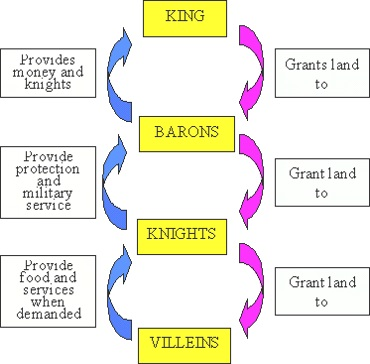
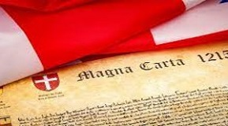

Lecture 3
Late Mediaeval England
During this period the former Anglo-Saxon elite were replaced by a new class of Norman nobility, though in many areas of society there was continuity, as the Normans adopted many of the Anglo-Saxon governmental institutions, including the tax system and the centralisation of law-making. Nevertheless changes soon began to be felt; a feudal system was introduced and significant legal reforms, extending and widening the scope of centralized royal law, were implemented.
The Norman Conquest
The Norman Conquest of England proved to be a turning point in English history and had a considerable influence on the English language. The Normans were by origin a Scandinavian tribe. In the 9th century they began inroads on the northern part of France and occupied the territory on both shores of the Seine estuary. During the century and a half between the Normans’ settlement in France and their invasion of England they had undergone a powerful influence of French culture. Mixing with the local population, they adopted the French language and in the mid-11th century, in spite of their Scandinavian origin, they were bearers of French feudal culture and of the French language.
Soon after Canute’s death (1042) and the collapse of his empire, the old Anglo-Saxon line was restored but the reign was short-lived. The new English king, Edward the Confessor (1042–1066), who had been reared in France, brought over many Norman advisors and favourites; he distributed among them English lands and wealth to the considerable resentment of the Anglo-Saxon nobility and appointed them to important positions in the government and church hierarchy. He not only spoke French himself, but insisted on it being spoken by the nobles at his court. William, Duke of Normandy, visited his court and it was rumoured that Edward appointed him his successor. In many respects Edward paved the way for Norman infiltration long before the Norman Conquest. However, the government was still in the hands of Anglo-Saxon lords, headed by the powerful Earl Godwin of Wessex.
In 1066, upon Edward’s death, the Elders of England (the Witan) proclaimed Harold Godwin king of England. As soon as the news reached William of Normandy, he mustered a big army and landed in Britain (The Norman Сonquest of England).
In the battle of Hasting, fought on October 14, 1066, Harold was killed and the English were defeated. This date is commonly known as the date of the Norman Conquest, though the military occupation of the country was not completed until a few years later. After the victory at Hastings, William by-passed London cutting it off from the north and made the Witan of London and the bishops at Westminster Abbey crown him king.
William the Conqueror’s coronation did not go as planned. When the people shouted “God Save the King” the nervous Norman guards at Westminster Abbey thought they were going to attack William. In their fear they set fire to nearby houses and the coronation ceremony ended in disorder.
In the course of a few years, putting down revolts in various parts of the country, burning down villages and estates, the Normans became masters of England. Mercia and Northumbria, which tried to rise against the conquerors, were relentlessly crushed and almost depopulated. Old fortifications were replaced by huge stone Norman castles while most of the lands of the Anglo-Saxon lords passed into the hands of the Norman barons. William’s own possessions comprised about one-third of the country. The Normans occupied all the major post in the church, government and army (The Norman Conquest of England).
Following the Conquest hundreds of people from France crossed the Channel to make their home in Britain. Immigration was easy, since the Norman kings of Britain were also dukes of Normandy and, about a hundred years later, took possession of the whole western part of France, thus bringing England into still closer contact with the continent. French monks, tradesmen and craftsmen flooded the south-western towns, so that not only the higher nobility but also much of the middle class was French. Generally speaking, during the reign of William the Conqueror about 200 000 Frenchmen settled in England.
A New Social Order: the Feudal System
Twenty years after the arrival of the Normans, only two of the greater landlords and two bishops were Saxons. The Saxon lands were given to Norman nobles, but William was careful in doing that.
As each new area of land was captured, William gave parts of it as a reward to his captains. This meant that they held separate small pieces of land in different parts of the country so that no noble could easily or quickly gather his fighting men to rebel. William only gave some of his nobles larger estates along the troublesome borders with Wales and Scotland. At the same time he kept enough land for himself to make sure he was much stronger than his nobles. Of all the farmland of England he gave half to the Norman nobles, a quarter to the Church, and kept a fifth himself. He kept the Saxon system of sheriffs, and used them as a balance to local nobles. As a result England was different from the rest of Europe because it had one powerful family, instead of a large number of powerful nobles. William, and the kings after him, thought of England as their personal property.
William organised his English kingdom according to the feudal system which had already begun to develop in England before his arrival. The word “feudalism” comes from the French word feu, which the Normans used to refer to land held in return for duty or service to a lord. The basis of feudal society was the holding of land, and its main purpose was economic. The central idea was that all land was owned by the king but it was held by others, called “vassals”, in return for services and goods. The king gave large estates to his main nobles in return for a promise to serve him in war for up to forty days. The nobles also had to give him part of the produce of the land. The greater nobles gave part of their lands to lesser nobles, knights, and other “freemen”. Some freemen paid for the land by doing military service, while others paid rent. The noble had “serfs” to work on his land. They were not free to leave the estate.
There were two basic principles to feudalism: every man had a lord, and every lord had land. The king was connected through this “chain” of people to the lowest man in the country. On the other hand, each lord had responsibilities to his vassals. He had to give them land and protection.
When a noble died his son usually took over his estate. But first he had to receive permission from the king and make a special payment. If he was still a child the king would often take the produce of the estate until the boy was old enough to look after the estate himself. In this way the king could benefit from the death of a noble. If all the noble’s family died the land went back to the king, who would be expected to give it to another deserving noble. But the king often kept the land for some years, using its wealth, before giving it to another noble.
William gave out land all over England to his nobles. By 1086 he wanted to know exactly who owned which piece of land, and how much it was worth. He needed this information so that he could plan his economy, find out how much was produced and how much he could ask in tax. He therefore sent a team of people all through England to make a complete economic survey. His men asked all kinds of questions at each settlement: How much land was there? Who owned it? How much was it worth? How many families, ploughs and sheep were there? And so on. Not surprisingly, it was most unpopular with the people, because they felt they could not escape from its findings. It so reminded them of the paintings of the Day of Judgement, or “doom”, on the walls of their churches that they called it the Domesday Book. It contained the result of the first kingdom-wide census taken in Europe since the time of the Romans and the codification of land and territories conquered by Normans. The Domesday Book still exists, and gives us an extraordinary amount of information about England at that time.
William controlled two large areas: Normandy, which he had been given by his father, and England, which he had won in war. Both were personal possessions, and it did not matter to the ruler that the ordinary people of one place were English while those of another were French. To William the important difference between Normandy and England was that as Duke of Normandy he had to recognise the king of France as his lord, whereas in England he was king with no lord above him.
Kingship: a Family Business
When William the Conqueror died, in 1087, he left the Duchy of Normandy to his elder son, Robert and England to his second son, William, known as “Rufus” (Latin for ‘red’ because of his red hair and red face). This control of lands both in England and France would provoke great problems, thus, as a consequence, wars between England and France would become a commonplace from this point in history on. When Robert went to fight the Muslims in the Holy Land, he left William II (Rufus) in charge of Normandy.
William Rufus died in a hunting accident in 1100, shot dead by an arrow. He had not married, and therefore had no son to take the crown. At the time of William’s death, Robert was on his way home to Normandy from the Holy Land. Their younger brother, Henry, knew that if he wanted the English crown he would have to act very quickly. He had been with William at the time of the accident. He rode to Winchester and took charge of the king’s treasury. He then rode to Westminster, where he was crowned king three days later. Robert was very angry and prepared to invade. But it took him a year to organise an army.
The Norman nobles in England had to choose between Henry and Robert. This was not easy because most of them held land in Normandy too. In the end they chose Henry because he was in London, with the crown already on his head. Robert’s invasion was a failure and he accepted payment to return to Normandy. But Henry wanted more. He knew that many of his nobles would willingly follow him to Normandy so that they could win back their Norman lands. In 1106 Henry invaded Normandy and captured Robert. Normandy and England were reunited under one ruler.
Henry I’s most important aim was to pass on both Normandy and England to his successor. He spent the rest of his life fighting to keep Normandy from other French nobles who tried to take it. But in 1120 Henry’s only son was drowned at sea. During the next fifteen years Henry hoped for another son but finally accepted that his daughter, Matilda, would follow him. Henry had married Matilda to another great noble in France, Geoffrey Plantagenet. Geoffrey was heir to Anjou, a large and important area south-west of Normandy. Henry hoped that the family lands would be made larger by that marriage. He made all the nobles promise to accept Matilda when he died. But then Henry himself quarrelled publicly with Matilda’s husband, and died soon after. Such a situation left the succession in question.
At the time both the possible heirs to Henry were on their own estates. Matilda was with her husband in Anjou and Henry’s nephew, Stephen of Blois, was in Boulogne, only a day’s journey by sea from England. As Henry had done before him, Stephen raced to England to claim the crown. Also as before, the nobles in England had to choose between Stephen, who was in England, and Matilda, who had quarreled with her father and who was still in France. Most chose Stephen, who was good at fighting but little else. He was described at the time as “of outstanding skill in arms, but in other things almost an idiot”.
Only a few nobles supported Matilda’s claim. Matilda invaded England four years later. Her fight with Stephen led to a terrible civil war in which villages were destroyed and many people were killed. Neither side could win. Finally in 1153, Matilda and Stephen agreed that Stephen could keep the throne but only if Matilda’s son, Henry, could succeed him. Fortunately for England, Stephen died the following year, and the family possessions of England and the lands in France were united under a king accepted by everyone. In December 1154, the young and vigorous Henry II became king of England following the anarchy and civil war of Stephen’s reign.
Henry II was the first unquestioned ruler of the English throne for a hundred years. He destroyed the castles which many nobles had built without royal permission during Stephen’s reign, and made sure that they lived in manor houses that were undefended. The manor again became the centre of local life and administration.
Henry II was a ruler of far more land than any previous king. As lord of Anjou he added his father’s lands to the family empire. After his marriage to Eleanor of Aquitaine he also ruled the lands south of Anjou. Henry II’s empire stretched from the Scottish border to the Pyrenees.
England provided most of Henry’s wealth, but the heart of his empire lay in Anjou. And although Henry recognized the king of France as the overlord of all his French lands, he actually controlled a greater area than the king of France. Many of Henry’s nobles held land on both sides of the English Channel.
However, Henry quarrelled with his beautiful and powerful wife, and his sons, Richard and John, took Eleanor’s side. It may seem surprising that Richard and John fought against their own father, but in fact they were doing their duty to the king of France, their feudal overlord, in payment for the lands they held from him. In 1189 Henry died a broken man, disappointed and defeated by his sons and by the French king.
Henry II was followed by his rebellious son. Richard I was one of England’s most popular kings, although he spent hardly any time in England. He was brave, and a good soldier, but his nickname Coeur de Lion, “lionheart”, shows that his culture, like that of the kings before him, was French. Richard was everyone’s idea of the perfect feudal king. He went to the Holy Land to make war on the Muslims and he fought with skill, courage and honour. On his way back from the Holy Land Richard was captured by the duke of Austria, with whom he had quarrelled in Jerusalem. The duke demanded money before he would let him go, and it took two years for England to pay. Shortly after, in 1199, Richard was killed in France. When he died the French king took over parts of Richard’s French lands to rule himself.
So during the 12th century English kings ruled over areas of land on the continent and were often at war with the French kings in disputes over ownership. In England a strict feudal system was imposed. Great nobles, or barons, were responsible directly to the king; lesser lords, each owning a village, were directly responsible to a baron. Under them were the peasants, tied by a strict system of mutual duties and obligations to the local lord, and forbidden to travel without his permission. The peasants were the English-speaking Saxons. The lords and the barons were the French-speaking Normans. This was the beginning of the English class system.
Linguistic Situation in Norman Britain
One of the most obvious changes was the introduction of the Anglo-Norman language as the language of the ruling classes in England, displacing the Anglo-Saxon language. Anglo-Norman retained the status of a prestige language for nearly 300 years and has had a significant influence on modern English.
The French language dominated in many spheres of life. It was the official language of administration, the language of the king’s court, the law courts, the church, the army and the castle. It was also the everyday language of many nobles, of the higher clergy and of many town people in the south. The intellectual life, literature and education were in the hands of French-speaking people; French, alongside Latin, was the language of writing. Teaching was largely conducted in French and boys at school were taught to translate their Latin into French instead of English.
For all that, England never stopped being an English-speaking country. The bulk of the population held fast to their own tongue: the lower classes in the towns, and especially in the countryside, in the Midlands and up north, continued to speak English and looked upon French as foreign and hostile. Since most of the people were illiterate, the English language was almost exclusively used for spoken communication.
Norman barons and the French town dwellers had to pick up English words. At first the two languages existed side by side without mingling. Then, slowly, they began to permeate each other. The Normans used English to make themselves understood, while the English began to use French words in current speech. A good knowledge of French would mark a person of higher standing giving him a certain social prestige. Probably many people became bilingual.
The struggle between French and English was bound to end in the complete victory of English, for English was the living language of the entire people, while French was restricted to certain social spheres and to writing. The earliest sign of the official recognition of English by the Norman kings was the famous Proclamation issued by Henry III in 1258. It was written in three languages: French, Latin and English.
The three hundred years of the domination of French affected English more than any other foreign influence before or after. The French borrowings reflect the spheres of Norman influence upon English life (The War that Changed the English Language).
One interpretation of the Conquest maintains that England became a cultural and economic backwater for almost 150 years after. Few kings of England actually resided in England, but ruled from cities in Normandy. The country remained an unimportant appendage of Norman lands. The conquerors remained ethnically distinct from the native population of England but over the centuries, the two groups merged.
Magna Carta and the Decline of Feudalism
After Richard’s death, who had spent only six months of his reign in England and his wars on the Continent had cost England a lot of money and weakened the Crown; his wicked brother John became king of England. He lost Normandy and other territories in the wars against the king of France. The fact justified his nickname “Lackland”. His vassals came over to England to receive lands and titles. John began to give the lands and castles of the first Norman barons, who had come with the Conqueror, to the newcomers. Hatred for King John united the old barons, bishops and the Anglo-Saxons in their almost open struggle against the king. In the civil war which broke out, the barons worked out a programme which King John was finally forced to sign and seal. Magna Carta, or the Great Charter, was signed on June 10, 1215. The document was a detailed statement of how the king’s government ought to work and what kind of relations there ought to be in a feudal state between the monarch and his vassals.
Magna Carta was the first document to lay the basis for the British Constitution. It marks a clear stage in the collapse of English feudalism. Vassals were gradually beginning to change into tenants. Feudalism, the use of land in return for service, was beginning to weaken.
At the beginning of the 13th century the strong system of government which the Normans had introduced meant that the Anglo-Norman kingdom was the most powerful political force on the British Isles. Not surprisingly therefore, the authority of the English monarch gradually extended to other parts of these islands in the next 250 years. By the end of the 13th century, a large part of eastern Ireland was controlled by Anglo-Norman lords in the name of the English king and the whole of Wales was under his direct rule (from that time the custom of naming the monarch’s eldest son the ‘Prince of Wales’ began). Scotland managed to remain politically independent in the mediaeval period, but was obliged to fight occasional wars to do so. It was in this period that Parliament began its gradual evolution into the democratic body which it is today.
The Beginnings of British Parliament
The origins of the parliament are to be found in the reign of Henry III, whose accession to the throne is considered to mark the start of the Plantagenet dynasty. He tried to centre all power in his hands. Several times he demanded money from the Great Council but the barons refused to grant money. The first attempt to curb the power of the king and his foreign advisers was made by Simon de Montfort, the leader of barons and a new merchant class. In 1258, they took over the government and elected a council of nobles which Simon de Montfort called parliament (from the French word “parler” – “to speak”). The nobles were supported by the towns, which wished to be free of Henry’s heavy taxes. In 1265, de Montfort called “two knights from every shire, two representatives from every borough” to his parliament. The first Parliament was quite a revolutionary body. It represented the interests of barons, the clergy and the new class of merchants.
In 1295, Henry III’s son, Edward I, called a parliament that became known as the Model Parliament at which barons, earls and the high clergy were present, together with the knights and burgesses representing the shires and boroughs. The House of Commons as a separate Chamber resulted from the unofficial meetings of those knights and burgesses. The person, chosen to ‘speak’ for those ‘commons’ in Parliament, became known as the Speaker. So, at the end of the 13th century Parliament was divided into the Lords (the barons) and the Commons (the knights and the burgesses). The alliance between the merchants and the squires paved the way to the growth of parliamentary power.
England’s Interest in Wales, Ireland and Scotland
Edward I was less interested in winning back parts of France than in bringing the rest of Britain under his control.
in Conwy
So, the Welsh who were free from English rule lived around Snowdon, were led by Llewellyn, prince of Gwynedd. Edward was determined to defeat him and bring Wales completely under his control. In 1282, Llewellyn was captured and killed. Edward then began a programme of castle building which was extremely expensive and took many years to complete.
In 1284, Edward united west Wales with England, bringing the English county system to the newly conquered lands. The English considered that Wales had become part of England. At a public ceremony at Caernarvon Edward I made his own baby son (later Edward II) Prince of Wales. From that time the eldest son of the ruling king or queen has usually been made Prince of Wales.
Before Edward became king of England his father Henry II had forced the Irish chiefs and Norman lords to accept his lordship. Henry II made Dublin the capital of his new colony. Edward I took as much money and as many men as he could for his wars against the Welsh and Scots. As a result Ireland was drained of its wealth. By 1318 it was able to provide the English king with only one-third of the amount it had been able to give in 1272. The Norman nobles and Irish chiefs quietly avoided English authority as much as possible. As a result, the English Crown only controlled Dublin and a small area around it, known as “the Pale”.
In Scotland things were very different. Although Scottish kings had sometimes accepted the English king as their “overlord”, they were much stronger than the many Welsh kings had been. Only the English king with a large army could hope to defeat the Scots. Most English kings hadn’t even tried, but Edward I was different.
In 1290 a crisis took place over the succession of the Scottish throne. There were thirteen possible heirs. Among them the most likely to succeed were John de Balliol and Robert Bruce, both Norman-Scottish knights. In order to avoid civil war the Scottish nobles invited Edward I to settle the matter.
Edward had already shown interest in joining Scotland to his kingdom. In 1286, he arranged for his own son to marry Margaret, the heir to the Scottish throne, but she died in a shipwreck. Now he had another chance. He told both men that they must do homage to him, and so accept his overlordship, before he would help settle the question. He then invaded Scotland and put one of them, John de Balliol, on the Scottish throne.
De Balliol’s four years as king were not happy. First, Edward made him provide money and troops for the English army and the Scottish nobles rebelled. Then Edward invaded Scotland again, and captured all the main Scottish castles. During the invasion Edward stole the sacred Stone of Destiny on which, so the legend said, all Scottish kings must sit. Edward believed that without the Stone, any Scottish coronation would be meaningless, and that his own possession of the Stone would persuade the Scots to accept him as king. However, neither he nor his successors became kings of Scots, and the Scottish kings managed perfectly well without it.
Edward’s treatment of the Scots created a popular resistance movement. At first it was led by William Wallace, a Norman-Scottish knight. Edward captured Wallace and executed him, putting his head on a pole on London Bridge. Edward tried to make Scotland a part of England, as he had done with Wales. Some Scottish nobles accepted him, but the people refused to be ruled by the English king. Scottish nationalism was born on the day Wallace died.
A new leader took up the struggle. That was Robert Bruce, who had competed with John de Balliol for the throne. He was able to raise an army and defeat the English army in Scotland. Edward I gathered another great army and marched against Robert Bruce, but he died on the way north in 1307. On Edward’s grave the words “Edward, the Hammer of the Scots” were written. He had intended to hammer them into the ground and destroy them, but in fact he had hammered them into a nation.
After Edward I’s death his son, Edward II, turned back to England. Bruce had time to defeat his Scottish enemies, and make himself accepted as king of the Scots. He then began to win back the castles still held by the English. When Edward II invaded Scotland in 1314 in an effort to help the last English-held castles, Bruce destroyed his army at Bannockburn, near Stirling. Six years later, in 1320, the Scots clergy meeting at Arbroath wrote to the pope in Rome to tell him that they would never accept English authority: “for as long as even one hundred of us remain alive, we will never consent to subject ourselves to the dominion of the English”.
The 13th-Century Culture in Britain
The 13th century in Britain witnessed the founding of the two great universities at Cambridge and Oxford. In 1214 Oxford received a charter from the Pope, and by the end of the 13th century four colleges had been founded and the university had become famous all over Europe. Cambridge is generally considered to date from 1209.
The Norman barons were followed to England by the churchmen, minstrels, merchants and artisans. Each rank of society had its own literature. Monks wrote historical chronicles in Latin. Scholars in universities wrote about their experiments, also in Latin. The aristocracy wrote their poetry in Norman-French. But the peasants and townspeople made up their songs and ballads in Anglo-Saxon.
Ballads about Robin Hood were composed and sung throughout the 12th and the 13th centuries. They describe Robin Hood, the famous legendary outlaw of the period as a strong, brave and skilful archer who would not accept Norman rule but lived free in Sherwood Forest.
Architecture experienced the development of the early Gothic style. It was in this style that the original Westminster Abbey was constructed.
Test Your Knowledge
- What date is commonly known as the date of the Norman Conquest?
- What measures did William the Conqueror undertake to strengthen and centralize his power?
- What was the basis of feudal society?
- What is the Domesday Book?
- What was the linguistic situation in England after the Norman Conquest?
- Why was Henry II the first unquestioned ruler of the English throne for a hundred years?
- What was the main reason for the barons’ struggle against King John?
- When was Magna Carta signed?
- Why is Magna Carta so highly respected in the country?
- What role did Simon de Montfort play in the history of Britain?
- When was the first parliament summoned?
- When was Parliament divided into the Lords and the Commons?
- Who were the leaders of Scottish popular resistance movement against England?
- When did the custom of naming the monarch’s eldest son the ‘Prince of Wales’ begin?
- Which English king was nicknamed “the Hammer of the Scots”?
- When were the two great universities at Cambridge and Oxford founded?